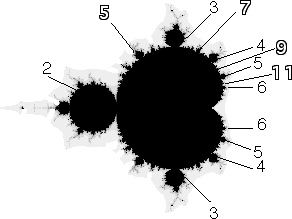
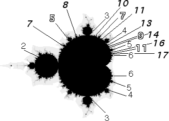

|  |
| Between n- and (n+1)-cycle discs of a
principal series, the smallest cycle number is 2n+1: |
| between the 2 and 3 is a 5 |
| between the 3 and 4 is a 7 |
| between the 4 and 5 is a 9 |
|
| and so on. |
|  |
| Between consecutive discs whose cycles we have already found, the
smallest cycle number is the sum of those just found. For example, |
| between the 2 and 5 is a 7 |
| between the 5 and 3 is an 8 |
| between the 3 and 7 is a 10 |
| between the 7 and 4 is an 11 |
| between the 4 and 9 is a 13 |
| between the 9 and 5 is a 14 |
| between the 5 and 11 is a 16 |
| between the 11 and 6 is a 17 |
|
| and so on. |
| This last rule persists to
all levels: between consecutve discs with cycle numbers p and q, the smallest
cycle number is p+q. This arrangement of features is
called the Farey sequence. |